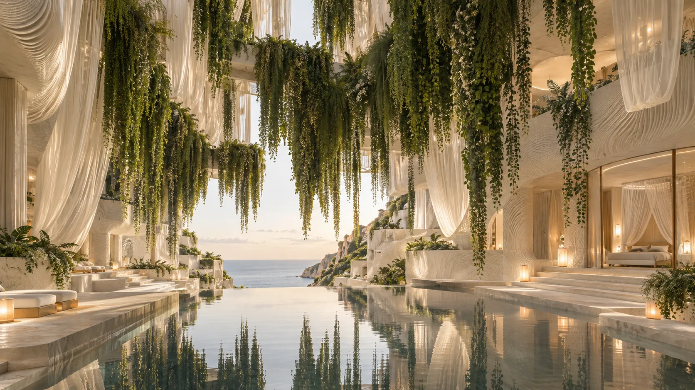
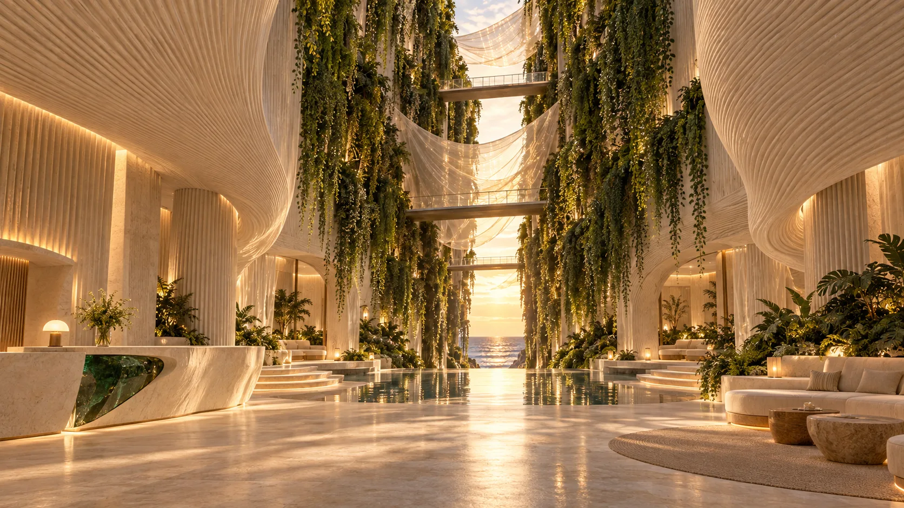
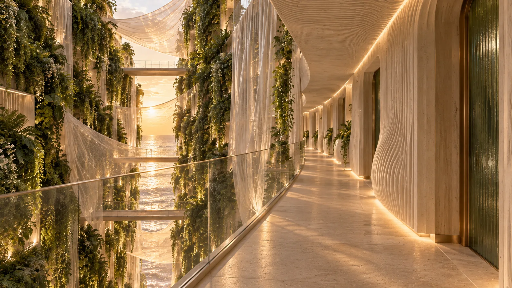
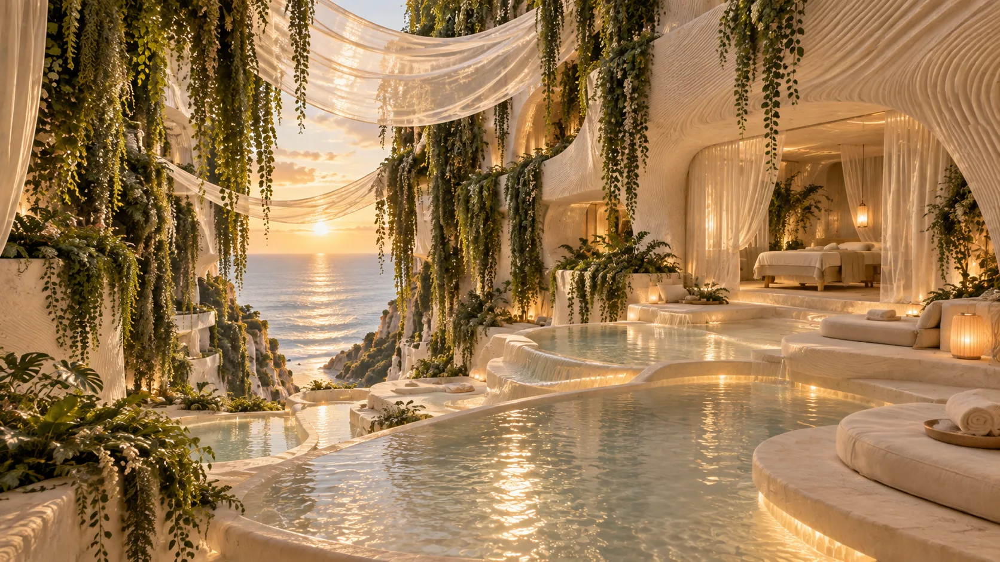
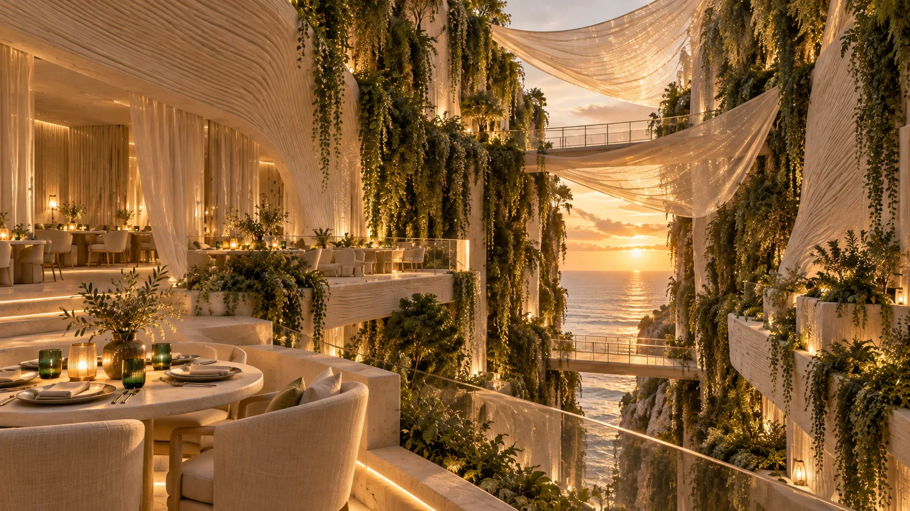
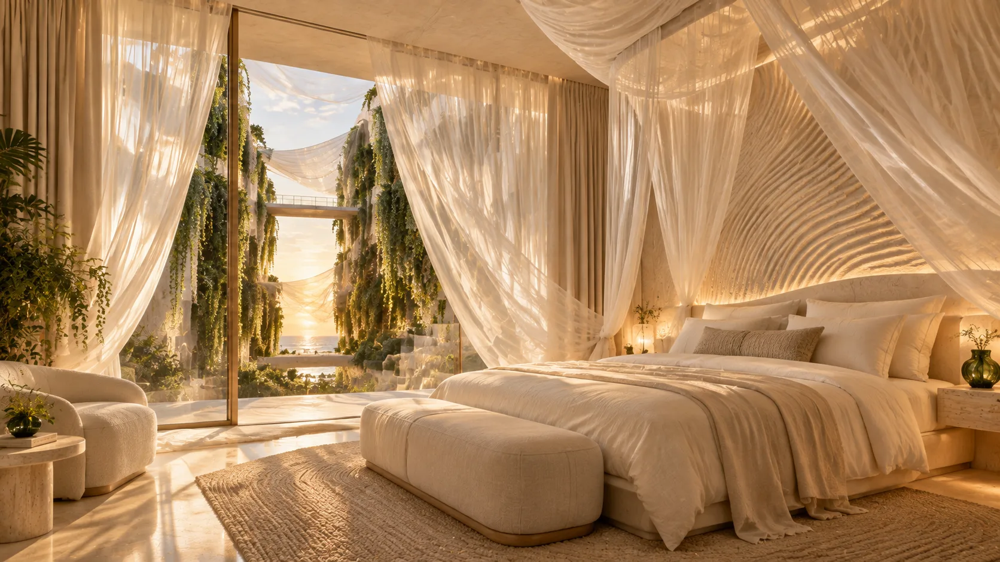
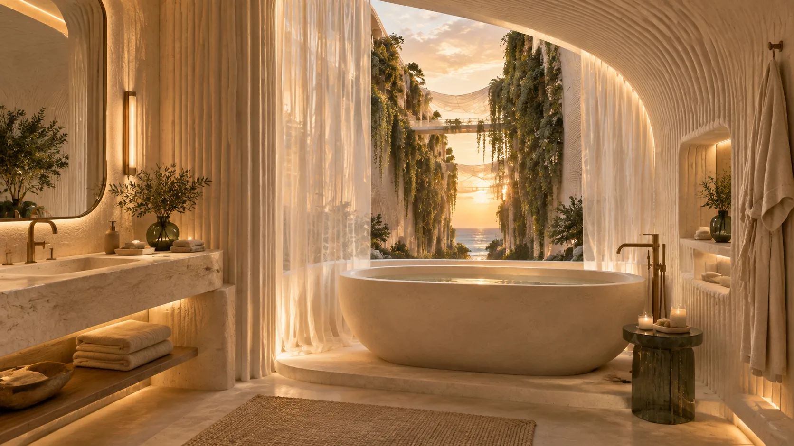
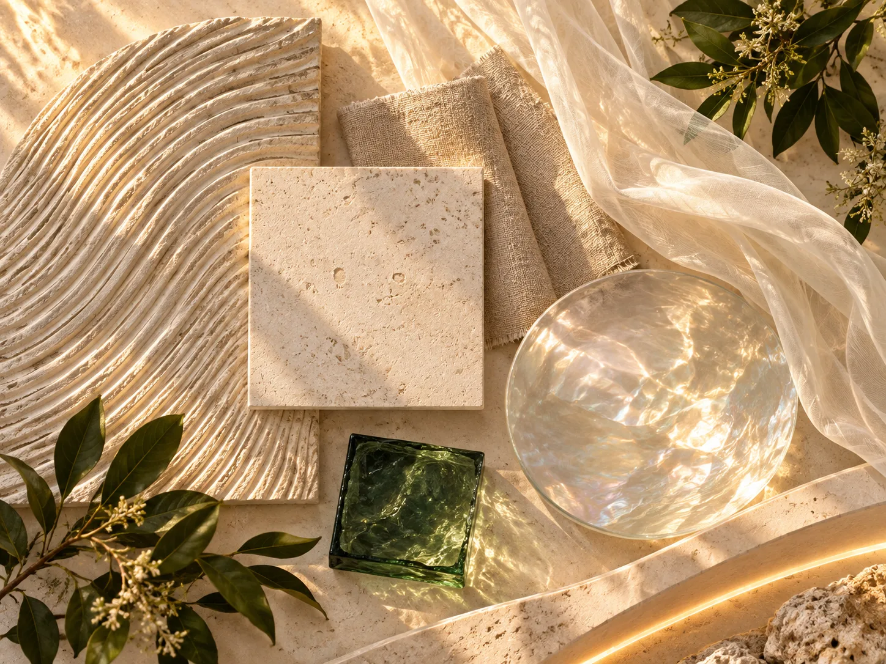
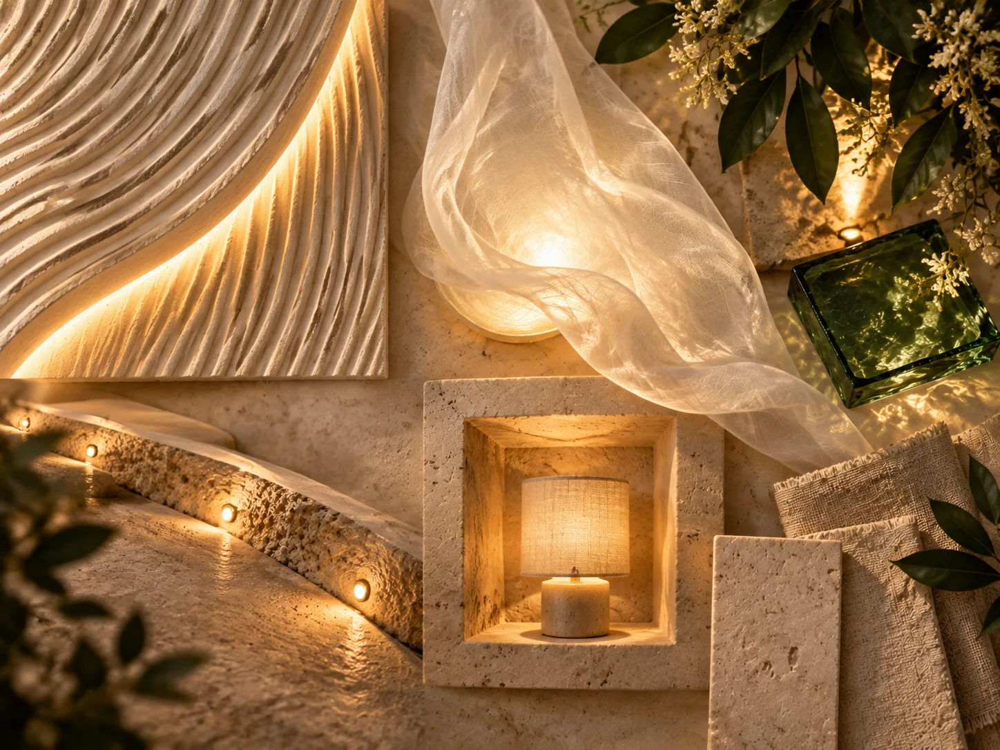

Boutique hotel concept
NACRA
A dune opens into a living world.

NACRA begins as a quiet line of sand-white architecture on the shore. Then the dune splits open. A hanging garden falls between two sculpted wings, crossed by slender bridges and almost weightless veils that filter the light. The sea appears at the end of this green passage. The arrival lobby, restaurant terraces and spa each offer a different view into the same space. In the guest rooms, sheer canopies soften the beds while layered tulle frames the garden and horizon. Ribbed plaster, pale stone and linen carry the warmth of sand; nacre-like glass catches the light. At dusk, concealed amber lighting draws out the textures without breaking the calm.
Material direction
Ribbed plaster; pale stone; linen; pearlescent glass; one deep-green glass accent; concealed amber lighting. Final finishes and construction details would be developed during technical design.
My role
Concept and creative direction - narrative, guest journey, spatial idea, colour and material palette, lighting direction, and art direction of the concept visualisations. Unbuilt concept study.
Concept & atmosphere
A quiet line of sand-white architecture on the shore - until the dune splits open and a hanging garden falls between the two sculpted wings, with the sea waiting at the end of this green passage. The palette carries the warmth of sand; nacre-like glass catches the light, with one deep-green accent.
Signature elements
The split dune wings; the hanging garden between them, crossed by slender bridges and almost weightless veils that filter the light. Spaces: arrival lobby, garden passage and bridges, restaurant terraces, spa and bathing terraces, guest rooms and bathrooms.
Lighting direction
At dusk, concealed amber lighting draws out the textures without breaking the calm - grazing light across ribbed plaster, softly glowing veils and low amber points revealing the materials after dark.
Experience & journey
Arrival moves from shelter into the light of the open garden. The lobby, restaurant terraces and spa each offer a different view into the same green passage; in the guest rooms, sheer canopies soften the beds while layered tulle frames the garden and horizon.
Scope of work
Concept and creative direction - narrative, guest journey, spatial idea, colour and material palette, lighting direction, and art direction of the concept visualisations. Unbuilt concept study.

Inside the split, a suspended garden meets layers of sheer fabric and reflected light.Open full size ↗ Two sculpted wings frame the garden, water and bridges from above.Open full size ↗
Two sculpted wings frame the garden, water and bridges from above.Open full size ↗
Arrival moves from shelter into the light of the open garden.Open full size ↗
A passage along the cut keeps the greenery and sea in view.Open full size ↗
Layered bathing terraces bring water, fabric and warm light together.Open full size ↗
Dining terraces overlook the hanging garden and horizon.Open full size ↗
A sheer canopy softens the bed; layered tulle filters the garden view.Open full size ↗
A quiet bathing room opens toward the green passage and sea.Open full size ↗
Ribbed plaster, pale stone, linen, pearlescent glass and one deep-green accent.Open full size ↗
Grazing light, softly glowing veils and low amber points reveal the materials after dark.Open full size ↗